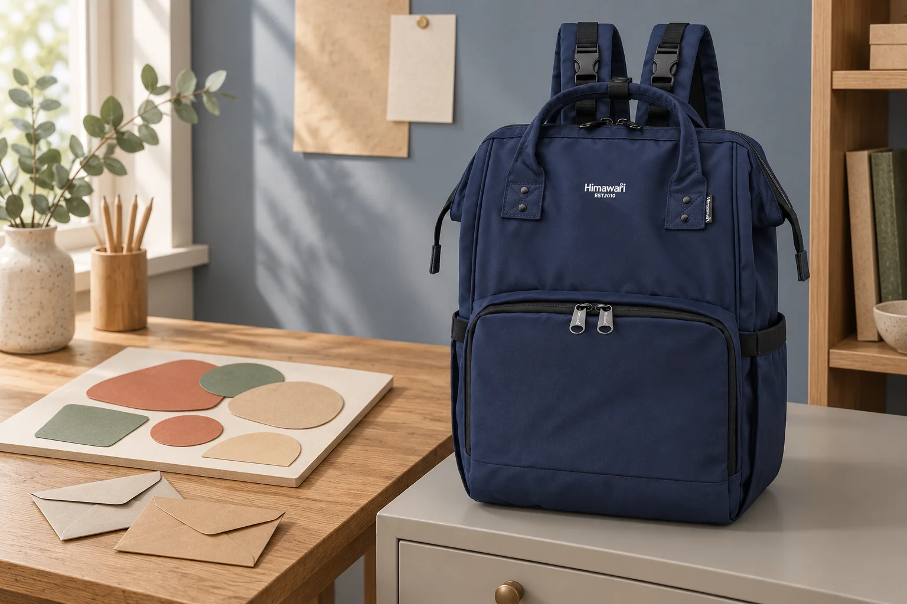

콜라주 작업을 멈출 때: 붙이기 전 종이 배치부터 남기기

콜라주 수업이 끝날 시간이 되었는데 바탕 종이에 놓은 조각을 아직 붙이지 못했습니다. 놓인 순서가 마음에 들어도 그대로 가방에 넣으면 조각이 흩어질 수 있습니다. 작업을 계속할 수 있도록 배치를 남긴 뒤 바탕과 조각을 정리해보세요. 완성품의 운반과는 다른, 붙이기 전 작업을 쉬어가는 준비입니다.
정리 전에 바탕 전체가 보이는 사진 남기기
사용 중인 바탕 종이를 평평하게 놓고 가장자리까지 보이게 촬영합니다. 카메라를 비스듬히 기울이면 조각 사이의 간격을 비교하기 어려우므로 종이 위쪽에서 전체를 담아보세요. 책상 모서리나 다른 작업물은 화면에서 덜어내고 자신의 배치만 기록합니다. 앞뒤가 비슷한 조각은 사진에서 방향을 알아볼 수 있는지도 확인하세요. 사진에 보이지 않는 뒷면의 특징은 별도 메모로 남길 수 있습니다.
떼어내는 순서에 맞춰 조각 묶기
위에 겹쳐놓은 조각부터 내려 작은 종이 봉투나 닫히는 보관함에 담습니다. 여러 위치에서 쓰던 조각이라면 ‘위쪽’이나 ‘왼쪽’처럼 본인이 다시 찾을 수 있는 이름으로 묶음을 구분해보세요. 작품 앞면에 번호를 직접 쓰고 싶지 않을 때는 조각을 담은 봉투 쪽에 표시합니다. 아직 위치를 정하지 못한 조각은 배치했던 묶음과 따로 두면 다음 작업에서 새 선택과 이전 배치를 구별할 수 있습니다.
바탕 종이는 휘지 않는 지지면과 함께
조각을 모두 거둔 바탕 종이는 크기에 맞는 파일이나 작업판 사이에 둡니다. 접착한 부분이 섞여 있다면 덮개를 대거나 포장해도 되는 상태인지 사용 재료의 안내와 강사의 설명을 확인하세요. 덜 마른 표면 위에 종이를 덮어 바로 가방에 넣는 방식은 피합니다. 작업판까지 포함한 크기가 가방 입구와 안쪽에 맞지 않으면 접어 넣지 않고 별도 운반 방법을 정하세요.
다음 작업은 사진과 바탕을 나란히 펼치기
집에서는 남긴 배치 사진을 보며 바탕과 조각 묶음을 함께 꺼냅니다. 겹치는 순서를 따라 다시 놓고 사진과 다른 자리도 확인하세요. 마음이 바뀌어 새로 배치한다면 붙이기 전 모습을 다시 남겨둘 수 있습니다. 사진 속 No.1211 네이비의 외부 치수는 가로 26 × 세로 40 × 폭 17 cm입니다. 콜라주와 작업판은 가상의 별도 소품이며 구성품이나 수납 가능 크기를 보여주는 예시가 아닙니다. 이 장면에서는 백팩을 작업물과 떨어진 곳에 두었습니다.
참고·안내
- Himawari No.1211 제품 정보
- 실제 Himawari No.1211 원본과 카탈로그 외부 치수 26 × 40 × 17 cm를 참고한 AI 연출 사진입니다. 주변 소품은 별도 연출이며 제품 구성품이나 수납 가능 여부를 뜻하지 않습니다.
자주 묻는 질문
아직 붙이지 않은 조각을 바탕 위에 둔 채 가져가도 되나요?
먼저 배치를 기록한 뒤 조각을 거둬 닫히는 보관함이나 봉투에 나눠 담을 수 있습니다. 그대로 옮길 경우에는 배치가 움직이지 않게 할 별도 방법을 작업 환경에 맞춰 정하세요.
붙인 부분이 섞여 있으면 바로 파일에 넣어도 되나요?
사용한 재료의 포장 가능 상태와 표면에 닿아도 되는 덮개를 확인하세요. 강사의 안내에 맞춰 정리하고, 아직 포장이 어려우면 안내받은 보관·운반 방법을 따릅니다.